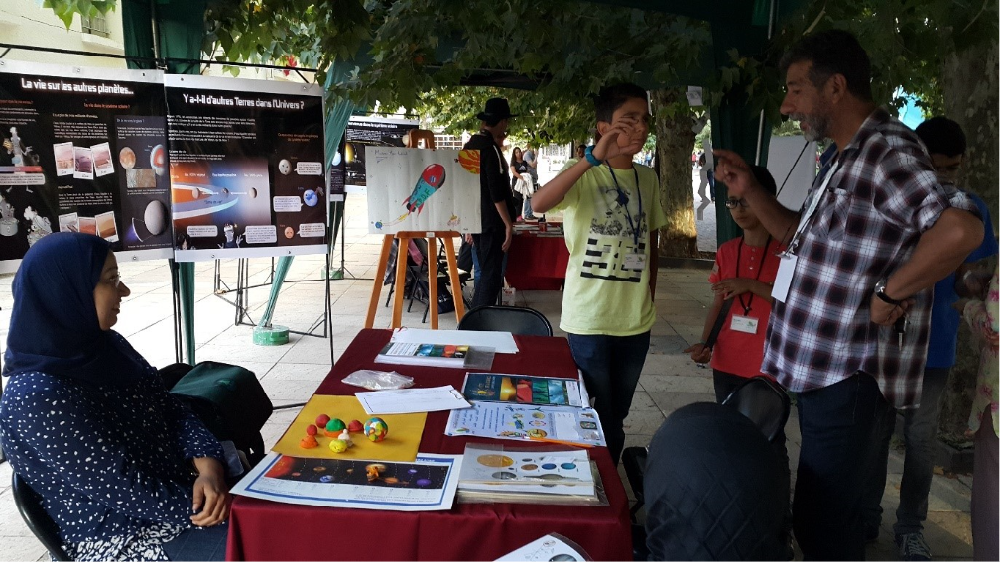
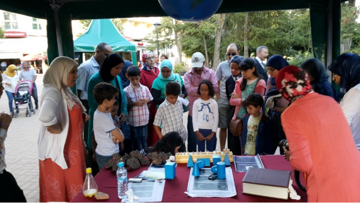
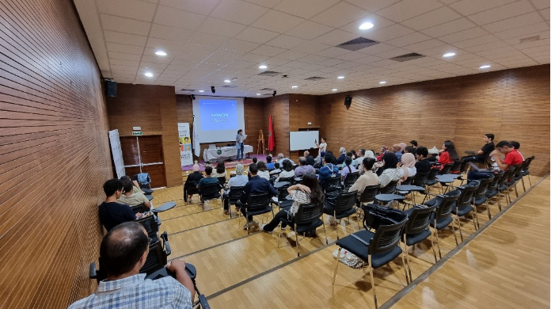
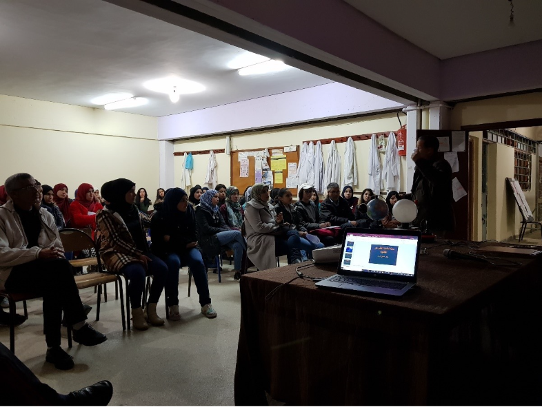
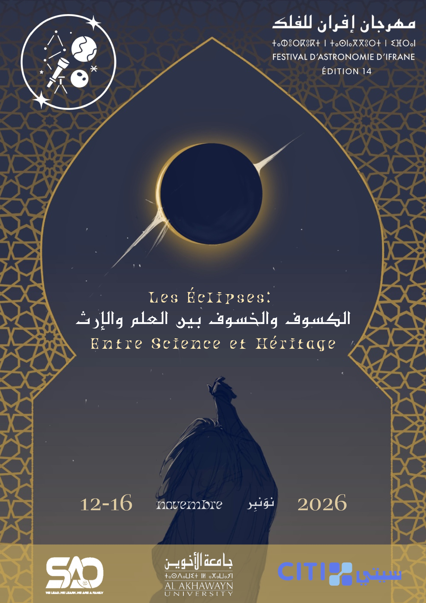
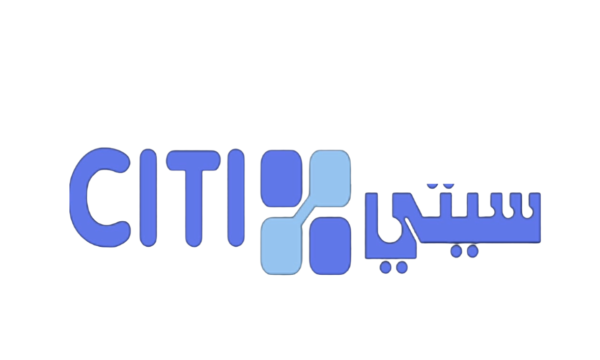
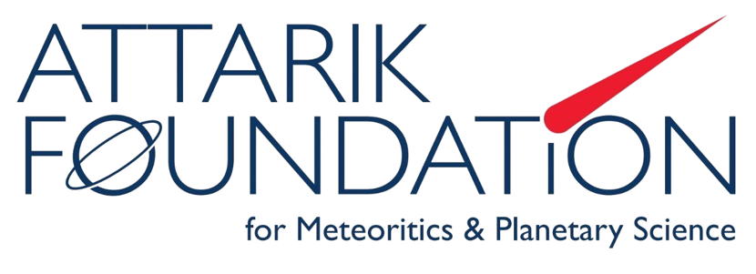
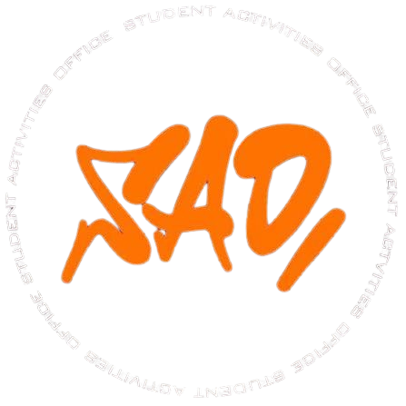

Éditions Précédentes
.png)
.png)
.png)

.png)
.png)




Le Festival d'Astronomie d'Ifrane est un événement annuel dédié au ciel et aux astres. Il rassemble un large public: quiconque portant intérêt, même infime, à l'astronomie est la bienvenue.
L'Université Al Akhawayn à Ifrane organisera la 14ème édition du Festival d'Astronomie d'Ifrane du 12 au 16 novembre 2026. Sous le thème « Les Éclipses: Entre Science et Héritage », cet événement confirme la vocation de la région comme espace privilégié de la popularisation scientifique.








كجزء من الدورة الرابعة عشرة لمهرجان علم الفلك: «الكسوف: بين العلم والتراث»، يسعدنا أن نعلن أن باب التقديم لمسابقة الخطابة مفتوح الآن! هذه هي فرصتك لعرض إبداعك وأصالتك وشغفك وتفسيرك لموضوع هذه الدورة. إذا تم اختيارك مسبقًا للمشاركة، فسيتعين عليك دفع رسوم غير قابلة للاسترداد بقيمة 50 درهمًا مغربيًا لتأمين مكانك. يمكنك الوصول أدناه إلى أحد نماذج التسجيل الثلاثة، وتنقسم المشاركات إلى فئات الإنجليزية والفرنسية والعربية (يجوز لكل مشارك الدخول في فئة واحدة فقط). سيقدم ما مجموعه 60 مشاركًا عروضهم للجمهور، وسيعتلي ثلاثة متأهلين للتصفيات النهائية - مصنفين حسب اللغة والفئة العمرية - المنصة! سيتم تقديم الجوائز! سيحصل جميع المشاركين الذين تم اختيارهم مسبقًا على شهادة مشاركة. يرجى قراءة اللوائح وشبكة التقييم المتاحة على هذه الصفحة بعناية قبل إرسال نصك وعرضك التقديمي. يُغلق باب التقديم في 30 أكتوبر 2026، الساعة 23:59.
يجب أن تتراوح مدة العروض التقديمية بين 4 و 5 دقائق ؛ وسيتم خصم نقاط عن كل 15 ثانية تزيد عن المدة المحددة أو تقل عنها.
يُقبل تقديم الطلبات باللغة الإنجليزية أو الفرنسية أو العربية (يرجى الرجوع إلى النموذج المخصص لإرسال طلبك).
يجب أن تكون جميع الأعمال المقدمة أصلية (النص والعرض التقديمي). يحظر تماما استخدام أدوات الذكاء الاصطناعي التوليدي.
يجب إدراج جميع المراجع المستخدمة في الشريحة الأخيرة من العرض التقديمي الخاص بكم.
يجب أن تتناول العروض التقديمية الموضوع التالي: «الكسوف بين العلم والتراث».
قد يؤدي أي طلب ترشيح لا يلتزم بهذه اللوائح إلى الاستبعاد من المسابقة.
يجب أن يكون المشاركون الذين تم اختيارهم مسبقًا متاحين يوم السبت 14 نوفمبر 2026، من الساعة 9 صباحًا حتى 3 مساءً.
سيتم تقييم خطابك من قبل لجنة التحكيم الرسمية وفقًا للمعايير الواردة أدناه. تعكس قائمة المعايير الجوانب الرئيسية التي تؤخذ في الاعتبار أثناء التقييم، ويبلغ إجمالي الدرجات 45 نقطة. يرجى مراجعة المعايير بعناية قبل إرسال خطابك.
| المعيار | محور التقييم | الوزن | الدرجة |
|---|---|---|---|
| 1. مدى ملاءمة المادة وإتقانها | مدى صلة المحتوى بالموضوع، ودقة المحتوى وفهم المحتوى | x2 | 5 نقاط |
| 2. إتقان اللغة | النطق واللفظ الدقيقان. إتقان جيد للمفردات وقواعد اللغة. | x2 | 5 نقاط |
| 3. لغة الجسد ونبرة الصوت | الإيماءات، ووضعية الجسم، والتواصل البصري. | x1 | 5 نقاط |
| 4. الإبداع والأصالة | أصالة المفهوم، وأسلوب سرد القصة، والنهج الفني والأفكار المبتكرة. | x2 | 5 نقاط |
| 5. جودة العرض التقديمي | التكوين البصري والتماسك، و فعالية الدعم المقدم للخطاب | x1 | 5 نقاط |
| 6. المدة | الالتزام بشرط المدة التي تتراوح بين 4 و 5 دقائق مع خصم نقاط عن كل 15 ثانية تزيد أو تقل عن النطاق المحدد. | x1 | 5 نقاط |
Dans le cadre de la 14ème Édition du Festival d'Astronomie «Éclipses: Entre science et Héritage», nous avons le plaisir d'annoncer que les inscriptions au Concours d'Art Oratoire sont désormais ouvertes!
C'est l'occasion de mettre en valeur votre créativité, originalité, passion et votre interprétation du thème de cette édition.
Si vous êtes présélectionné pour participer, vous devrez régler des frais non remboursables de 50 MAD pour confirmer votre inscription.
Vous trouverez ci-dessous les formulaires d'inscription; et les participations sont réparties en trois catégories: Anglais, Français et Arabe (Chaque participant ne peut concourir que dans une seule catégorie).
Un total de 60 participants présenteront au public, et trois finalistes -par langue et fourchette d'âge- monteront sur le podium! Des prix seront remis! Tous les participants présélectionnés recevront un certificat de participation.
Veuillez lire attentivement le règlement du concours et la grille d'évaluation disponibles sur cette page avant de soumettre votre script et diapositives.
La date limite de soumission est fixée au 30 Octobre 2026, à 23h59. Nous avons hâte de découvrir vos créations!
Votre discours sera évalué par le jury officiel selon les critères ci-dessous. La grille d'évaluation présente les principaux aspects pris en compte lors de l'évaluation, pour un total de 45 points. Veuillez lire attentivement ces critères avant d'envoyer votre discours.
| Criterion | Evaluation Focus | Weight | Score |
|---|---|---|---|
| 1. Pertinence et maîtrise du sujet | Pertinence par rapport au thème, exactitude du contenu et compréhension de celui-ci | x2 | 5PTS |
| 2. Maîtrise de la langue | Une prononciation et une articulation précises. Une bonne maîtrise du vocabulaire et de la grammaire. | x2 | 5PTS |
| 3. Langage corporel et intonation | Les gestes, la posture et le contact visuel. | x1 | 5PTS |
| 4. Créativité et originalité | Originalité du concept, narration, approche artistique et idées novatrices. | x2 | 5PTS |
| 5. Qualité de la présentation | Composition visuelle, cohérence et efficacité du soutien à l'exposé | x1 | 5PTS |
| 6. Durée | Respect de la durée requise de 4 à 5 minutes, avec une déduction de points pour chaque tranche de 15 secondes au-dessus ou en dessous de la fourchette indiquée. | x1 | 5PTS |
As part of the 14th Edition of the Astronomy Festival: «Eclipses: Between Science and Heritage», we are happy to announce that applications for the Public Speaking Competition are now open!
This is your opportunity to showcase your creativity, originality, passion, and interpretation of this edition's theme.
If you get preselected to participate, you will have to pay a nonrefundable fee of 50 MAD to secure your spot.
You can access below one of the three registration forms, and submissions are divided into English, French, and Arabic categories (Each participant may enter only one category).
A total of 60 participants will perform for the audience, and three finalists -categorized by language and age group- will take the podium! Prizes will be given! All preselected participants will receive a certificate of participation.
Please carefully read the regulations and evaluation rubric available on this page before submitting your script and presentation.
Submissions close on October 30th, 2026, at 23:59.
Your speech will be evaluated by the official jury according to the criteria below. The rubric reflects the main aspects considered during the evaluation, with a total score of 45 points. Please review the criteria carefully before submitting your speech.
| Criterion | Evaluation Focus | Weight | Score |
|---|---|---|---|
| 1. Relevance & Mastery of Material | Relevance to the theme, accuracy of the content, and understanding of the content | x2 | 5PTS |
| 2. Command of Language | Precise pronunciation and enunciation. Good command of vocabulary and grammar. | x2 | 5PTS |
| 3. Body Language & Tone | Gestures, posture, and eye contact. | x1 | 5PTS |
| 4. Creativity & Originality | Originality of the concept, storytelling, artistic approach, and innovative ideas. | x2 | 5PTS |
| 5. Quality of Presentation | Visual composition, coherence, and effectiveness of support to the speech | x1 | 5PTS |
| 6. Duration | Respect of the 4-5-minutes requirement with points deduction for every 15 seconds above or below the specified range. | x1 | 5PTS |
كجزء من الدورة الرابعة عشرة لمهرجان علم الفلك: «الكسوف: بين العلم والتراث»، يسعدنا أن نعلن أن باب التقديم لمسابقة مقاطع الفيديو مفتوح الآن! هذه هي فرصتك لعرض إبداعك وأصالتك وشغفك وتفسيرك لموضوع هذه الدورة. يمكنك الوصول أدناه إلى أحد نماذج التسجيل الثلاثة، وتنقسم المشاركات إلى فئات الإنجليزية والفرنسية والعربية (يجوز لكل مشارك الدخول في فئة واحدة فقط). سيكون لكل فئة ثلاثة متأهلين للتصفيات النهائية على المنصة، وسيتم تقديم الجوائز! سيحصل جميع المشاركين الذين تتوافق مشاركاتهم مع لوائح استخدام الذكاء الاصطناعي على شهادة مشاركة. يرجى قراءة اللوائح وشبكة التقييم المتاحة على هذه الصفحة بعناية قبل إرسال مقطع الفيديو الخاص بك. يُغلق باب التقديم في 30 أكتوبر 2026، الساعة 23:59.
يجب أن تتراوح مدة مقاطع الفيديو بين 4-5 دقائق، مع خصم نقاط عن كل 15 ثانية تزيد أو تقل عن النطاق المحدد.
يُقبل تقديم الطلبات باللغة الإنجليزية أو الفرنسية أو العربية (يرجى الرجوع إلى النموذج المخصص للإرسال).
يجب أن تكون جميع الأعمال المقدمة أصلية. يُحظر تمامًا استخدام أدوات الذكاء الاصطناعي التوليدي.
يجب أن تكون مقاطع الفيديو ذات صلة بالموضوع الكسوف بين العلم والتراث.
أي ترشيح لا يلتزم بهذه اللوائح قد يؤدي إلى الاستبعاد.
يجب أن يكون المشاركون الذين تم اختيارهم مسبقًا متاحين يوم الجمعة 13 نوفمبر 2026، من الساعة 1:00 مساءً إلى 4:30 مساءً.
سيتم تقييم مقطع الفيديو الخاص بك من قبل لجنة التحكيم الرسمية وفقًا للمعايير الواردة أدناه. توضح شبكة التقييم الجوانب الرئيسية التي تؤخذ في الاعتبار أثناء التقييم، بإجمالي 40 نقطة. يرجى قراءة هذه المعايير بعناية قبل إرسال مقطع الفيديو الخاص بك.
| المعيار | محور التقييم | الوزن | النقطة |
|---|---|---|---|
| 1 المحتوى ومدى ارتباطه بالموضوع | مدى ملاءمة الموضوع، ودقة المحتوى، والقيمة المضافة. | x2 | 5 نقاط |
| 2 الإبداع والأصالة | أصالة المفهوم، والسرد، والنهج الفني، والأفكار المبتكرة. | x2 | 5 نقاط |
| 3 الجودة البصرية | التكوين البصري، والمونتاج، وتماسك الصور وفعاليتها. | x2 | 5 نقاط |
| 4 جودة الصوت | وضوح السرد، والموسيقى، والمؤثرات الصوتية، وجودة الصوت بشكل عام. | x1 | 5 نقاط |
| 5 مدة الفيديو | الالتزام بشرط المدة المحددة التي تتراوح بين 4-5 دقائق، مع خصم نقاط عن كل 15 ثانية تزيد أو تقل عن النطاق المحدد. | x1 | 5 نقاط |
Dans le cadre de la 14ème Édition du Festival d'Astronomie «Éclipses: Entre Science et Héritage», nous avons le plaisir d'annoncer que les inscriptions au Concours de Montage Vidéo sont désormais ouvertes!
C'est l'occasion de mettre en valeur votre créativité, originalité, passion et votre interprétation du thème de cette édition.
Vous trouverez ci-dessous les formulaires d'inscription; et les participations sont réparties en trois catégories: Anglais, Français et Arabe (Chaque participant ne peut concourir que dans une seule catégorie).
Trois finalistes monteront sur le podium pour chaque catégorie, et des prix seront remis! Tous les participants dont la vidéo respecte le règlement en accord avec l'IA recevront une attestation de participation.
Veuillez lire attentivement le règlement du concours et la grille d'évaluation disponibles sur cette page avant de soumettre votre vidéo.
La date limite de soumission est fixée au 30 Octobre 2026, à 23h59.
Votre vidéo sera évaluée par le jury officiel selon les critères ci-dessous. La grille d'évaluation présente les principaux aspects pris en compte lors de l'évaluation, pour un total de 40 points. Veuillez lire attentivement ces critères avant d'envoyer votre vidéo.
| Critère | Éléments évalués | Pondération | Score |
|---|---|---|---|
| 1. Content & Relevance | Pertinence par rapport au thème, exactitude du contenu et valeur ajoutée. | ×2 | 5PTS |
| 2. Creativity & Originality | Originalité du concept, narration, approche artistique et idées novatrices. | x2 | 5PTS |
| 3. Visual Quality | Composition visuelle, montage, cohérence et efficacité des images. | x2 | 5PTS |
| 4. Sound & Audio Quality | Clarté de la narration, musique, effets sonores et qualité audio globale. | x1 | 5PTS |
| 5. Duration | Respect de la durée requise de 4 à 5 minutes, avec une déduction de points pour chaque tranche de 15 secondes au-dessus ou en dessous de la fourchette indiquée. | x1 | 5PTS |
As part of the 14th Edition of the Astronomy Festival: «Eclipses: Between Science and Heritage», we are happy to announce that applications for the Video Clip Competition are now open!
This is your opportunity to showcase your creativity, originality, passion, and interpretation of this edition's theme.
You can access below one of the three registration forms, and submissions are divided into English, French, and Arabic categories (Each participant may enter only one category).
Each category will have three finalists on the podium, and prizes will be given! All participants whose submission complies with the Al-use regulations will receive a certificate of participation.
Please carefully read the regulations and evaluation rubric available on this page before submitting your video.
Submissions close on October 30th, 2026, at 23:59.
Your video will be evaluated by the official jury according to the criteria below. The rubric reflects the main aspects considered during the evaluation, with a total score of 40 points. Please review the criteria carefully before submitting your video.
| Criterion | Evaluation Focus | Weight | Score |
|---|---|---|---|
| 1. Content & Relevance | Relevance to the theme, accuracy of the content, and added value. | x2 | 5PTS |
| 2. Creativity & Originality | Originality of the concept, storytelling, artistic approach, and innovative ideas. | x2 | 5PTS |
| 3. Visual Quality | Visual composition, editing, coherence, and effectiveness of imagery. | x2 | 5PTS |
| 4. Sound & Audio Quality | Clarity of narration, music, sound effects, and overall audio quality. | x1 | 5PTS |
| 5. Duration | Respect of the 4-5-minutes requirement with points deduction for every 15 seconds above or below the specified range. | x1 | 5PTS |